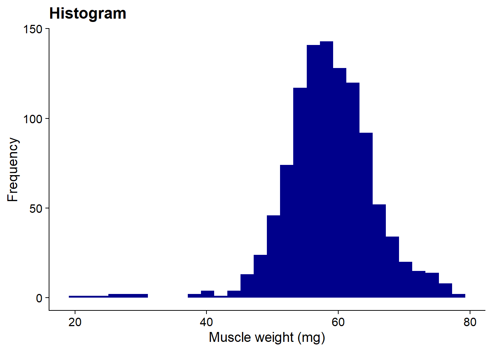
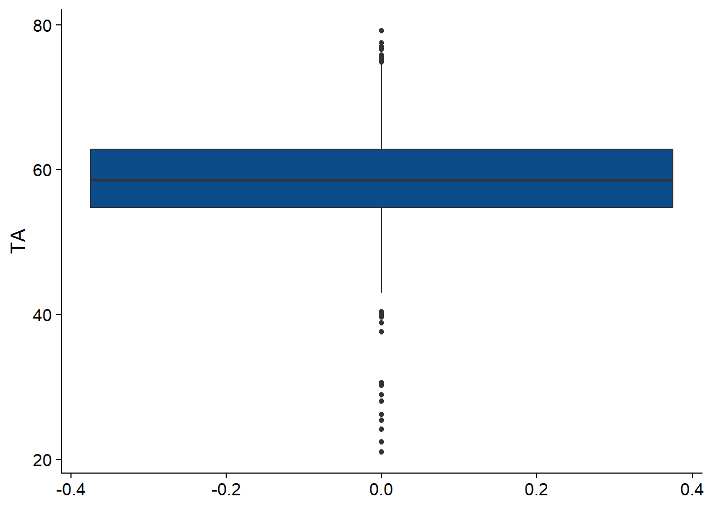
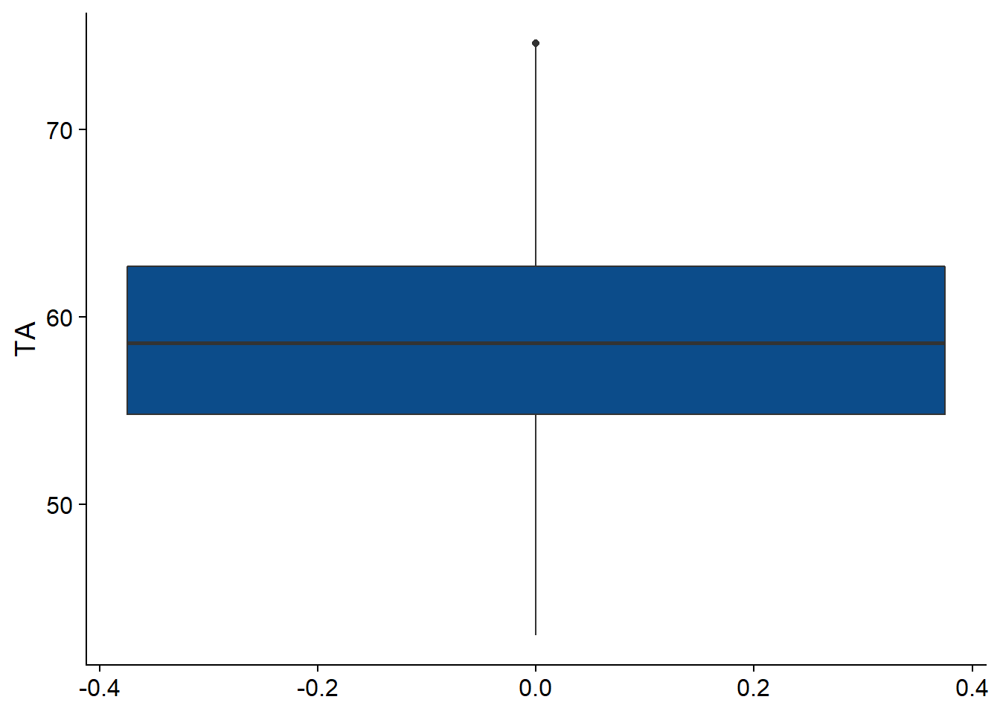

Last updated: 2020-09-16
Checks: 7 0
Knit directory: visualization/
This reproducible R Markdown analysis was created with workflowr (version 1.6.2). The Checks tab describes the reproducibility checks that were applied when the results were created. The Past versions tab lists the development history.
Great! Since the R Markdown file has been committed to the Git repository, you know the exact version of the code that produced these results.
Great job! The global environment was empty. Objects defined in the global environment can affect the analysis in your R Markdown file in unknown ways. For reproduciblity it’s best to always run the code in an empty environment.
The command set.seed(20200916) was run prior to running the code in the R Markdown file. Setting a seed ensures that any results that rely on randomness, e.g. subsampling or permutations, are reproducible.
Great job! Recording the operating system, R version, and package versions is critical for reproducibility.
Nice! There were no cached chunks for this analysis, so you can be confident that you successfully produced the results during this run.
Great job! Using relative paths to the files within your workflowr project makes it easier to run your code on other machines.
Great! You are using Git for version control. Tracking code development and connecting the code version to the results is critical for reproducibility.
The results in this page were generated with repository version bdb62f7. See the Past versions tab to see a history of the changes made to the R Markdown and HTML files.
Note that you need to be careful to ensure that all relevant files for the analysis have been committed to Git prior to generating the results (you can use wflow_publish or wflow_git_commit). workflowr only checks the R Markdown file, but you know if there are other scripts or data files that it depends on. Below is the status of the Git repository when the results were generated:
Ignored files:
Ignored: .Rhistory
Ignored: .Rproj.user/
Untracked files:
Untracked: scatter_plot.pdf
Note that any generated files, e.g. HTML, png, CSS, etc., are not included in this status report because it is ok for generated content to have uncommitted changes.
These are the previous versions of the repository in which changes were made to the R Markdown (analysis/Visualization_challenge.Rmd) and HTML (docs/Visualization_challenge.html) files. If you’ve configured a remote Git repository (see ?wflow_git_remote), click on the hyperlinks in the table below to view the files as they were in that past version.
| File | Version | Author | Date | Message |
|---|---|---|---|---|
| Rmd | bdb62f7 | KiseokUchicago | 2020-09-16 | updates |
| html | ed599f7 | KiseokUchicago | 2020-09-16 | Build site. |
| Rmd | 3331f39 | KiseokUchicago | 2020-09-16 | wflow_publish("analysis/*Rmd") |
| html | 6797e0d | KiseokUchicago | 2020-09-16 | Build site. |
| html | d2a9966 | KiseokUchicago | 2020-09-16 | Build site. |
| Rmd | 7aca681 | KiseokUchicago | 2020-09-16 | pushing |
Mapping the genetic basis of physiological and behavioral traits in outbred mice
You are working in a lab studying studying the genetics of physiological and behavioral traits in mice. The lab has just completed a large study of mice from an outbred mouse population, “CFW” (“Carworth Farms White”). The aim of the study is to identify genetic contributors to variation in behaviour and musculoskeletal traits.
# load libraries
library(ggplot2)
library(cowplot)
library(ggrepel)
library(htmlwidgets)
library(plotly)
다음의 패키지를 부착합니다: 'plotly'The following object is masked from 'package:ggplot2':
last_plotThe following object is masked from 'package:stats':
filterThe following object is masked from 'package:graphics':
layout# Import data
# Import pheno.csv
# Read the phenotype data from the CSV file.
pheno <- read.csv("data/pheno.csv",quote = "",check.names = FALSE,
stringsAsFactors = FALSE)
# Remove the data from the methamphetamine sensitivity testing, since
# these data will not be used in the programming challenge. Also, most
# of the data from the prepulse inhibition tests will not be used, so
# we can remove those columns as well.
pheno <- pheno[c(1:38,65:67)]
# Convert some of the columns to factors.
pheno <- transform(pheno,
id = as.character(id),
round = factor(round,paste0("SW",1:25)),
FCbox = factor(FCbox),
PPIbox = factor(PPIbox),
methcage = factor(methcage),
methcycle = factor(methcycle),
discard = factor(discard),
mixup = factor(mixup),
earpunch = factor(earpunch),
abnormalbone = factor(abnormalbone),
experimenters = factor(experimenters))
# Convert the "fasting glucose" column to double precision.
pheno <- transform(pheno,fastglucose = as.double(fastglucose))
# Remove rows marked as "discard" and as possible sample mixups.
pheno <- subset(pheno,discard == "no" & mixup == "no")
hmdp <- read.csv("data/hmdp.csv", stringsAsFactors = FALSE)
gwscan <- read.csv("data/gwscan.csv", stringsAsFactors = FALSE)
gwscan <- transform(gwscan, chr = factor(chr, 1:19))
geno <- read.csv("data/geno_rs29477109.csv", stringsAsFactors = FALSE)
geno <- transform(geno, id = as.character(id))colnames(pheno) [1] "id" "round" "cageid" "FCbox"
[5] "PPIbox" "methcage" "methcycle" "discard"
[9] "mixup" "earpunch" "glucoseage" "methage"
[13] "FCage" "PPIage" "sacage" "bw0"
[17] "bw1" "bw2" "bw3" "PPIweight"
[21] "sacweight" "BMD" "TA" "EDL"
[25] "gastroc" "plantaris" "soleus" "tibia"
[29] "abnormalbone" "experimenters" "testisweight" "taillength"
[33] "fastglucose" "PreTrainD1" "AvToneD1" "AvContextD2"
[37] "AvAltContextD3" "AvToneD3" "PPIavg" "startle"
[41] "avgnostim" pheno$TA [1] NA 74.6 62.3 54.1 56.5 64.0 65.7 53.1 54.8 75.7 57.4 64.4 55.7 58.6
[15] 59.8 60.7 75.7 63.6 61.6 65.0 57.9 63.8 54.8 65.5 56.9 74.5 52.4 57.8
[29] 60.4 48.8 62.9 67.4 67.2 62.7 59.6 53.7 61.5 53.5 NA 69.0 60.9 53.6
[43] 56.9 57.2 55.9 NA 59.5 NA 57.3 57.2 63.2 66.5 58.3 56.4 65.0 53.5
[57] 63.8 65.5 59.8 57.7 49.2 59.3 59.6 63.5 54.3 55.4 61.9 54.0 56.2 69.3
[71] 49.8 55.4 65.9 59.5 65.4 57.8 52.1 57.9 55.8 54.9 52.3 61.5 62.8 61.9
[85] 54.9 54.9 56.5 66.8 60.9 60.2 54.6 69.6 60.6 59.5 55.1 75.6 60.5 58.1
[99] 61.2 67.4 64.7 50.9 54.8 67.8 55.4 70.8 55.4 71.7 58.9 55.4 62.3 54.7
[113] 77.5 55.0 59.9 63.5 60.2 55.3 64.9 65.0 52.7 60.5 56.8 58.6 58.0 64.3
[127] 52.3 56.6 57.3 52.5 62.4 66.6 55.5 64.1 58.6 72.3 51.9 58.5 52.7 NA
[141] NA NA NA 63.2 46.0 57.9 54.8 64.3 60.8 65.1 66.0 52.0 60.3 56.6
[155] 62.9 65.4 61.0 55.9 63.0 56.9 56.5 53.2 58.6 58.8 55.5 56.4 56.2 64.1
[169] 61.2 62.0 43.9 58.9 54.9 55.6 66.0 61.8 62.1 53.6 55.4 47.8 59.8 73.5
[183] 61.9 63.4 55.9 60.8 67.8 56.4 58.6 57.9 52.9 56.4 58.3 65.7 63.9 53.0
[197] 67.0 52.1 57.2 64.4 58.8 64.2 51.3 59.4 63.9 69.4 50.1 64.0 68.2 66.5
[211] 53.3 57.4 66.0 56.5 73.4 59.8 49.6 68.0 56.9 62.0 56.7 59.1 50.4 54.8
[225] 55.6 60.4 50.7 71.0 55.2 59.8 58.0 72.6 53.2 58.4 66.0 53.8 52.3 60.7
[239] 63.9 53.2 53.7 64.2 70.8 65.2 70.1 62.6 66.6 72.5 60.0 46.7 53.5 52.2
[253] 63.0 60.7 56.0 50.4 60.5 63.2 58.3 54.2 59.0 55.5 54.7 57.2 52.1 50.6
[267] 57.7 61.8 45.7 66.0 58.8 58.1 49.9 59.8 53.3 51.7 66.0 55.4 51.3 59.1
[281] 63.8 57.7 61.1 59.6 55.6 52.8 60.3 59.4 54.8 55.9 62.1 55.5 56.8 55.2
[295] 59.5 65.2 67.4 58.6 54.9 58.9 54.4 55.9 68.2 56.3 59.1 57.1 58.5 63.4
[309] 62.0 60.7 62.4 56.2 48.0 59.2 58.1 48.5 22.4 67.8 61.4 65.6 54.6 53.8
[323] 68.4 74.5 56.2 63.7 63.3 51.5 60.4 58.2 57.2 57.4 48.8 64.8 58.8 60.2
[337] 54.2 59.2 59.1 62.9 54.5 53.7 64.5 59.4 71.3 59.4 57.2 55.7 52.6 55.2
[351] 57.3 62.8 63.6 54.8 60.8 67.3 56.1 46.9 47.2 54.7 53.3 57.8 60.6 62.2
[365] 62.9 52.8 64.5 64.2 64.4 50.0 67.1 57.1 61.0 61.3 52.8 64.5 60.6 58.4
[379] 52.3 49.4 57.2 57.6 54.0 54.9 67.2 61.2 58.3 46.4 68.7 66.6 62.5 48.6
[393] 61.6 62.5 56.8 54.2 55.8 49.9 46.8 58.6 54.7 73.3 49.6 63.5 64.7 66.1
[407] 56.8 53.8 60.8 52.0 57.4 67.9 54.9 62.2 66.6 51.4 63.8 58.7 55.9 68.0
[421] 55.2 61.6 60.1 59.2 NA NA 59.8 61.0 66.3 48.4 52.0 57.8 61.6 55.7
[435] 58.7 57.1 51.4 60.6 48.7 62.3 60.0 59.8 59.4 60.4 56.7 58.9 56.8 66.2
[449] 61.8 55.0 63.3 63.7 68.6 69.4 59.3 51.5 61.0 58.7 64.0 55.7 59.9 64.6
[463] 62.9 65.5 54.4 74.6 57.3 56.9 68.4 59.5 61.1 57.0 54.4 55.6 58.7 63.2
[477] 54.1 59.5 53.6 52.2 62.8 56.9 52.2 61.4 55.7 61.8 58.1 61.8 54.3 55.2
[491] 47.5 70.9 59.2 52.2 71.3 61.4 53.0 66.5 49.0 54.8 58.3 54.3 52.5 73.5
[505] 58.8 55.5 50.3 52.2 55.7 62.3 54.9 55.2 64.0 58.1 57.6 50.8 52.8 51.2
[519] 72.5 58.9 58.5 56.3 58.3 68.7 26.2 62.5 56.9 66.0 62.0 63.3 59.6 64.9
[533] 65.8 56.8 62.2 55.8 24.1 65.9 50.7 65.8 64.2 55.4 52.7 65.4 52.4 62.9
[547] 68.8 62.3 68.9 70.2 65.1 58.8 59.4 64.0 56.6 52.0 60.7 65.2 64.6 55.1
[561] 73.2 67.9 63.7 51.0 62.8 61.0 73.1 60.6 60.2 63.5 61.4 53.8 65.0 63.7
[575] 77.0 60.7 57.1 30.6 56.1 59.2 69.6 62.6 64.4 75.4 72.3 58.2 61.2 60.6
[589] 52.8 60.4 57.1 58.7 63.8 61.2 48.9 59.1 63.2 61.9 62.2 58.5 65.5 59.5
[603] 56.4 50.6 74.9 55.9 63.2 56.7 51.1 57.3 60.5 57.8 57.7 55.3 56.5 54.7
[617] 47.2 51.4 54.6 53.8 58.0 56.5 55.6 63.9 39.6 54.9 57.2 48.9 70.3 64.9
[631] 48.9 60.0 54.6 61.5 69.7 53.1 62.7 63.4 57.1 49.1 56.5 50.9 53.2 47.1
[645] 60.9 60.9 59.5 66.2 53.1 59.3 58.1 53.9 61.6 63.1 55.4 71.3 50.2 59.5
[659] 73.4 50.7 59.5 60.8 58.8 58.5 49.9 61.0 39.9 63.6 51.1 61.9 60.9 61.1
[673] 58.6 63.7 54.1 50.6 59.1 63.5 75.2 61.8 63.1 61.1 65.1 56.1 63.6 50.6
[687] 62.6 57.5 55.0 60.7 56.5 52.4 61.9 52.7 58.5 45.9 51.8 57.7 54.3 62.8
[701] 56.3 53.0 61.1 55.8 69.1 63.7 58.5 68.2 68.4 62.6 60.8 53.9 54.0 64.2
[715] 67.6 56.1 61.8 69.8 64.3 51.7 57.9 54.5 61.3 57.3 65.1 66.5 62.3 64.7
[729] 75.8 64.5 63.2 59.8 71.9 52.2 55.4 55.8 61.1 75.3 51.6 53.5 57.3 52.6
[743] 56.9 62.9 53.6 48.8 60.0 57.8 61.5 56.0 60.9 53.5 52.3 61.7 56.3 65.7
[757] 60.1 61.6 55.7 25.4 73.5 56.4 65.1 59.1 64.7 54.4 58.5 48.2 62.5 62.0
[771] 60.8 57.1 69.0 61.0 56.5 65.0 64.2 52.3 51.0 57.8 57.9 55.4 NA 53.5
[785] 50.3 61.7 55.5 62.8 62.9 62.2 61.8 56.8 51.0 61.9 57.4 49.8 52.5 51.1
[799] 50.3 61.6 55.6 63.4 40.4 58.4 49.9 57.0 58.3 49.5 76.6 61.0 46.6 51.4
[813] 61.3 53.9 48.4 46.0 52.4 NA 67.0 63.0 51.3 53.4 61.8 52.7 58.8 70.9
[827] 53.8 54.6 58.8 62.1 53.7 59.7 55.9 65.6 55.2 NA 71.9 54.1 65.9 54.1
[841] 57.6 62.0 62.6 75.0 54.2 60.6 62.3 63.2 58.4 60.5 70.2 60.4 60.0 79.2
[855] 53.2 60.6 54.9 62.1 54.3 54.1 51.8 58.2 56.1 46.3 47.3 55.3 58.1 59.1
[869] 64.8 56.0 52.9 54.3 58.1 62.7 46.0 56.0 47.7 55.9 53.6 48.6 56.8 53.5
[883] 49.6 54.2 56.8 54.4 51.8 55.4 65.8 61.2 57.9 60.1 62.5 55.0 61.3 57.0
[897] 60.0 51.9 56.3 59.7 66.1 63.5 53.5 59.2 49.1 52.2 61.3 62.2 54.5 61.5
[911] 57.2 59.7 56.1 21.0 59.6 62.9 57.2 67.4 69.0 54.8 44.8 53.0 51.7 59.1
[925] 71.8 50.8 50.1 58.4 56.1 60.3 53.2 58.8 NA 50.8 40.2 66.9 61.2 NA
[939] 67.8 60.5 53.5 62.2 55.9 56.2 60.4 59.2 54.7 68.6 61.8 64.4 55.0 56.8
[953] 62.6 59.1 57.6 46.8 70.2 66.5 61.2 57.3 53.0 58.5 55.5 60.2 NA 60.8
[967] 52.7 54.3 61.5 69.7 58.4 67.0 57.3 54.3 71.7 62.9 61.7 57.0 54.5 58.3
[981] 58.4 56.0 65.9 56.3 68.8 61.0 NA 62.8 58.2 52.8 59.6 66.3 56.6 55.5
[995] 65.1 43.0 58.5 59.0 57.4 51.3 55.3 56.6 70.1 63.5 53.3 49.2 55.9 54.4
[1009] 52.0 49.1 56.7 51.1 50.2 49.2 67.3 55.5 51.9 55.0 57.9 28.0 64.5 53.4
[1023] 59.5 55.0 57.0 64.6 54.3 56.6 37.6 70.1 38.8 57.3 51.1 56.4 54.8 53.2
[1037] 30.2 68.6 NA 62.3 57.6 68.7 53.9 64.4 63.8 62.7 74.4 59.7 59.7 64.5
[1051] 53.9 63.0 53.0 59.6 66.2 62.5 45.1 58.4 50.6 44.9 62.5 63.1 56.7 61.2
[1065] 63.9 28.9 64.2 59.3 54.1 57.7 59.3 66.1 62.6 67.2 51.0 58.0 57.8 64.3
[1079] 53.7 63.5 63.1 NA NA NA NA NA NA NA NA NA NA NA# table(pheno$TA)
p_TA <- ggplot(pheno, aes_string(x='TA')) +
geom_histogram(fill='darkblue') +
labs(x= 'Muscle weight (mg)', y= 'Frequency', title = "Histogram") +
theme_cowplot()
p_TA`stat_bin()` using `bins = 30`. Pick better value with `binwidth`.Warning: Removed 29 rows containing non-finite values (stat_bin). The distribution is roughly normal. We see some outliers with small muscle weight.
# linear model with all data
fit <- lm(data=pheno, TA ~ tibia)
coef(fit)(Intercept) tibia
-49.885968 5.902719 # linear model without outliers
# let's first detect outliers with box plot
ggplot(pheno) +
aes_string(y ="TA") +
geom_boxplot(fill = "#0c4c8a") +
theme_cowplot()Warning: Removed 29 rows containing non-finite values (stat_boxplot).
# Using the IQR criterion
# (https://towardsdatascience.com/outliers-detection-in-r-6c835f14e554)
boxplot.stats(pheno$TA)$out [1] 75.7 75.7 75.6 77.5 22.4 26.2 24.1 77.0 30.6 75.4 74.9 39.6 39.9 75.2 75.8
[16] 75.3 25.4 40.4 76.6 75.0 79.2 21.0 40.2 28.0 37.6 38.8 30.2 28.9# fit2 <- lm(da)
p_sc <- ggplot(pheno,aes_string(x = "tibia",y = "TA")) +
geom_point(color='darkgrey') +
labs(x= 'Tibia length (mm)', y= 'Weight (mg)', title = "Histogram")+
geom_abline(color='forestgreen', intercept = coef(fit)[1], slope=coef(fit)[2]) + geom_abline(intercept = 13, slope = -1/28, color = 'orange')+
theme_cowplot()
# green line is the linear model with all data
# orange line is the linear model without outliers
unique(pheno$TA) [1] NA 74.6 62.3 54.1 56.5 64.0 65.7 53.1 54.8 75.7 57.4 64.4 55.7 58.6 59.8
[16] 60.7 63.6 61.6 65.0 57.9 63.8 65.5 56.9 74.5 52.4 57.8 60.4 48.8 62.9 67.4
[31] 67.2 62.7 59.6 53.7 61.5 53.5 69.0 60.9 53.6 57.2 55.9 59.5 57.3 63.2 66.5
[46] 58.3 56.4 57.7 49.2 59.3 63.5 54.3 55.4 61.9 54.0 56.2 69.3 49.8 65.9 65.4
[61] 52.1 55.8 54.9 52.3 62.8 66.8 60.2 54.6 69.6 60.6 55.1 75.6 60.5 58.1 61.2
[76] 64.7 50.9 67.8 70.8 71.7 58.9 54.7 77.5 55.0 59.9 55.3 64.9 52.7 56.8 58.0
[91] 64.3 56.6 52.5 62.4 66.6 55.5 64.1 72.3 51.9 58.5 46.0 60.8 65.1 66.0 52.0
[106] 60.3 61.0 63.0 53.2 58.8 62.0 43.9 55.6 61.8 62.1 47.8 73.5 63.4 52.9 63.9
[121] 53.0 67.0 64.2 51.3 59.4 69.4 50.1 68.2 53.3 73.4 49.6 68.0 56.7 59.1 50.4
[136] 50.7 71.0 55.2 72.6 58.4 53.8 65.2 70.1 62.6 72.5 60.0 46.7 52.2 56.0 54.2
[151] 59.0 50.6 45.7 49.9 51.7 61.1 52.8 54.4 56.3 57.1 48.0 59.2 48.5 22.4 61.4
[166] 65.6 68.4 63.7 63.3 51.5 58.2 64.8 54.5 64.5 71.3 52.6 67.3 56.1 46.9 47.2
[181] 62.2 50.0 67.1 61.3 49.4 57.6 46.4 68.7 62.5 48.6 46.8 73.3 66.1 67.9 51.4
[196] 58.7 60.1 66.3 48.4 48.7 66.2 68.6 64.6 57.0 47.5 70.9 49.0 50.3 50.8 51.2
[211] 26.2 65.8 24.1 68.8 68.9 70.2 73.2 51.0 73.1 77.0 30.6 75.4 48.9 74.9 51.1
[226] 39.6 70.3 69.7 49.1 47.1 53.9 63.1 50.2 39.9 75.2 57.5 45.9 51.8 69.1 67.6
[241] 69.8 75.8 71.9 75.3 51.6 61.7 25.4 48.2 40.4 49.5 76.6 46.6 53.4 59.7 75.0
[256] 79.2 46.3 47.3 47.7 21.0 44.8 71.8 40.2 66.9 43.0 28.0 37.6 38.8 30.2 74.4
[271] 45.1 44.9 28.9unique(pheno$tibia) [1] NA 19.05 18.06 18.14 18.18 18.35 18.24 18.20 17.94 19.19 17.77 18.31
[13] 18.19 19.04 18.52 18.61 18.37 18.71 17.79 18.65 17.83 18.28 18.84 18.47
[25] 18.29 17.74 18.78 19.02 18.93 18.87 18.57 19.08 18.49 18.79 18.68 18.00
[37] 18.45 18.42 18.72 18.58 18.36 17.97 18.25 18.16 17.59 18.05 18.34 18.64
[49] 17.70 18.10 18.30 19.33 19.01 18.67 18.74 18.32 17.84 18.11 18.86 18.17
[61] 18.09 18.69 19.00 18.48 17.53 17.88 18.60 18.38 18.44 18.12 18.50 18.76
[73] 18.04 19.65 18.73 18.40 18.63 17.86 18.53 17.42 18.33 18.22 17.76 18.51
[85] 17.95 17.93 17.56 18.03 18.15 17.72 19.54 18.54 17.85 18.56 18.62 18.21
[97] 17.90 17.21 18.89 19.09 18.97 18.39 18.77 18.23 17.81 18.70 18.90 18.59
[109] 17.89 18.81 19.21 17.73 18.96 18.01 17.46 17.91 17.87 17.92 19.46 19.24
[121] 19.34 19.14 17.82 17.34 17.44 18.07 17.51 17.96 17.64 18.99 17.49 18.02
[133] 17.45 18.08 18.83 17.99 18.26 19.31 18.43 18.13 17.54 17.31 18.66 19.06
[145] 19.36 19.40 19.13 18.95 19.39 18.91 19.18 19.25 19.56 19.74 19.29 18.82
[157] 19.47 19.82 16.92 17.75 18.75 18.27 17.57 17.37 17.50 18.46 18.80 18.41
[169] 18.85 19.26 18.88 18.94 17.66 19.03 17.48 17.28 18.92 18.55 19.16 17.01
[181] 19.37 18.98 17.98 17.61 17.69 19.30 17.67 16.74 17.55 17.60 17.10 17.04
[193] 17.80 17.62 19.67 17.68 16.99 17.71 17.39 17.65 19.22 17.63 19.35 19.07
[205] 19.63 19.17 19.48 19.12 19.23 17.26 19.20 19.49# there are some NA values
p_scWarning: Removed 35 rows containing missing values (geom_point).
sessionInfo()R version 4.0.2 (2020-06-22)
Platform: x86_64-w64-mingw32/x64 (64-bit)
Running under: Windows 10 x64 (build 18363)
Matrix products: default
locale:
[1] LC_COLLATE=Korean_Korea.949 LC_CTYPE=Korean_Korea.949
[3] LC_MONETARY=Korean_Korea.949 LC_NUMERIC=C
[5] LC_TIME=Korean_Korea.949
attached base packages:
[1] stats graphics grDevices utils datasets methods base
other attached packages:
[1] plotly_4.9.2.1 htmlwidgets_1.5.1 ggrepel_0.8.2 cowplot_1.1.0
[5] ggplot2_3.3.2 workflowr_1.6.2
loaded via a namespace (and not attached):
[1] Rcpp_1.0.5 pillar_1.4.6 compiler_4.0.2 later_1.1.0.1
[5] git2r_0.27.1 tools_4.0.2 digest_0.6.25 viridisLite_0.3.0
[9] jsonlite_1.7.0 evaluate_0.14 lifecycle_0.2.0 tibble_3.0.3
[13] gtable_0.3.0 pkgconfig_2.0.3 rlang_0.4.7 rstudioapi_0.11
[17] yaml_2.2.1 xfun_0.16 httr_1.4.2 withr_2.2.0
[21] stringr_1.4.0 dplyr_1.0.1 knitr_1.29 generics_0.0.2
[25] fs_1.5.0 vctrs_0.3.2 tidyselect_1.1.0 rprojroot_1.3-2
[29] grid_4.0.2 data.table_1.13.0 glue_1.4.2 R6_2.4.1
[33] rmarkdown_2.3 farver_2.0.3 tidyr_1.1.1 purrr_0.3.4
[37] magrittr_1.5 whisker_0.4 backports_1.1.7 scales_1.1.1
[41] promises_1.1.1 ellipsis_0.3.1 htmltools_0.5.0 colorspace_1.4-1
[45] httpuv_1.5.4 labeling_0.3 stringi_1.5.3 lazyeval_0.2.2
[49] munsell_0.5.0 crayon_1.3.4